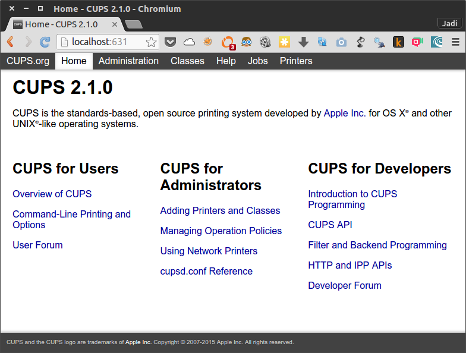

108.4 Manage printers and printing
Weight: 2
Candidates should be able to manage print queues and user print jobs using CUPS and the LPD compatibility interface.
Key Knowledge Areas
- Basic CUPS configuration (for local and remote printers).
- Manage user print queues.
- Troubleshoot general printing problems.
- Add and remove jobs from configured printer queues.
Terms and Utilities
- CUPS configuration files, tools and utilities
- /etc/cups/
- lpd legacy interface (lpr, lprm, lpq)
CUPS
Most Linux distros use CUPS for printing. CUPS stands for Common Unix Printing System. There are different interfaces for CUPS link command line tools, web based interface and GUIs. CUPS is designed to simplify the printing on various printers from different manufactures.
CUPS web interface
The general way to access the CUPS configuration and info page is going to the servers IP on port 631 from a browser. That will be localhost:631 or 127.0.0.1:631 from your browser.

Important parts on this webpage are:
|Jobs tab|to check the jobs the CUPS is handling|
|Administration|For adding printers, managing jobs and configuring the CUPS server|
|Printers|Show the printers|
as soon as you push the Add Printer button, you will need to give CUPS admin user password
Suggested Activity: Visit your CUPS web interface and add a printer
Good news is that the CUPS has most of the common printer drivers installed. You just need to choose the printer from the dropdown menu.
configuration files
As any other linux program, CUPS saves its configuration at /etc directory.
# ls /etc/cups
cups-browsed.conf interfaces raw.types subscriptions.conf
cupsd.conf ppd snmp.conf subscriptions.conf.O
cups-files.conf raw.convs ssl
One important file is cupsd.conf. Have a look at it; it is very easy to understand. For example the Listen localhost:631 line tells the CUPS to listen on localhost port 631.
All the printer data is saved at /etc/cups/printers.conf. The web interface or any other GUI is actually editing this file.
# Printer configuration file for CUPS v2.1.0
# Written by cupsd
# DO NOT EDIT THIS FILE WHEN CUPSD IS RUNNING
<DefaultPrinter Apple-Dot-Matrix>
UUID urn:uuid:0f6c2f2b-6338-388a-76de-09f2ef1994d5
Info Apple Dot Matrix
Location Fake Location
MakeModel Apple Dot Matrix Foomatic/appledmp (recommended)
DeviceURI ipp://fakeprinter/
State Idle
StateTime 1453402271
ConfigTime 1453402271
Type 8433668
Accepting Yes
Shared Yes
JobSheets none none
QuotaPeriod 0
PageLimit 0
KLimit 0
OpPolicy default
ErrorPolicy retry-job
</DefaultPrinter>
legacy tools
Just like the MTA programs, CUPS support all the legacy command line programs too.
| command | usage |
|---|---|
| lpr | print a file |
| lpq | show print queue/jobs |
| lprm | rm/remove a file from priner queue |
| lpc | printer control / troubleshooting program |
lpq
The q is for queue therefor lpq shows the printer queue and is used when you want to see the jobs. If you use the -a switch, the lpq will show the jobs of all printers. Alternatively you can use the -P switch to show the jobs of a specific printer. So the following command will show the jobs of a printer called Apple-Dot-Matrix:
# lpq -PApple-Dot-Matrix
Apple-Dot-Matrix is ready and printing
Rank Owner Job File(s) Total Size
active unknown 1 unknown 7168 bytes
1st unknown 2 unknown 2048 bytes
It is strange but there should not be ANY space between
-Pand the printers name
lpr
This command is used to send a job to a printer. Again the printer is specified by -P.
$ lpr -PApple-Dot-Matrix for_print.txt
lpq
Apple-Dot-Matrix is ready and printing
Rank Owner Job File(s) Total Size
active jadi 1 Untitled Document 1 7168 bytes
1st jadi 2 Untitled1 2048 bytes
2nd jadi 3 for_print.txt 1024 bytes
If no printer is specified, the default printer will be used
lprm
The rm is for remove so the lprm will remove jobs from the queue. You need to provide the Job ID to this command.
$ lpq
Apple-Dot-Matrix is ready and printing
Rank Owner Job File(s) Total Size
active jadi 1 Untitled Document 1 7168 bytes
1st jadi 2 Untitled1 2048 bytes
2nd jadi 3 for_print.txt 1024 bytes
jadi@funlife:/tmp$ lprm 2
jadi@funlife:/tmp$ lpq
Apple-Dot-Matrix is ready and printing
Rank Owner Job File(s) Total Size
active jadi 1 Untitled Document 1 7168 bytes
1st jadi 3 for_print.txt 1024 bytes
Only root can remove other peoples print jobs
If you need to remove ALL the jobs of a specific printer, you can go with -Pprinter_name -. Yes! that is only one dash (-) after the printer name; that's why this is called a legacy command.
the
lprm -will remove all the print jobs
lpc
Here, the c is for control. lpc lets you check the status (via lpc status) and troubleshoot your printers.
$ lpc status
Apple-Dot-Matrix:
printer is on device 'ipp' speed -1
queuing is enabled
printing is enabled
2 entries
daemon present
Here,
- queuing is enabled tell us that the queue can accept new print jobs. If the queue is disabled, you can not even send new jobs to the printer.
- printing is enabled means that the printer is actually can print on the paper. This will be on the disable state if the printer is out of ink or paper or experiencing a paper jam.
If you are having problems with your printer or need to prevent it from accepting new jobs or let it accept jobs but not print, these four commands will let you achieve your needs:
| command | usage |
|---|---|
| cupsaccept | tells the printer queue to accept new jobs |
| cupsreject | tells the printer to reject any new job |
| cupsenable | enables the actual/physical printing of the jobs |
| cupsdisable | disables the physical printing of the jobs |
In all cases you have to provide the printer name of the printer. it is also possible to provide a reason using
-rswitch.
$ cupsdisable Apple-Dot-Matrix -r "need more paper"
$ lpc status
Apple-Dot-Matrix:
printer is on device 'ipp' speed -1
queuing is enabled
printing is disabled
2 entries
daemon present